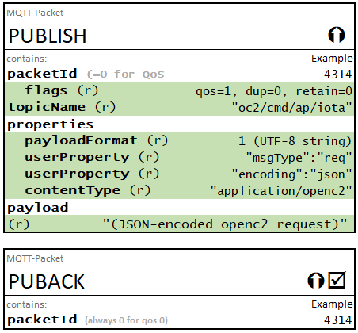
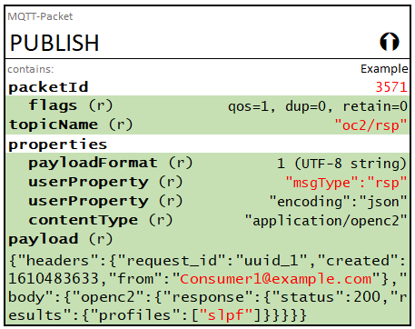
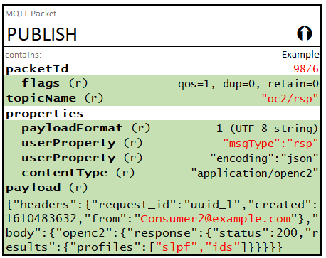
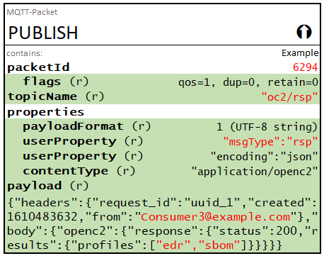
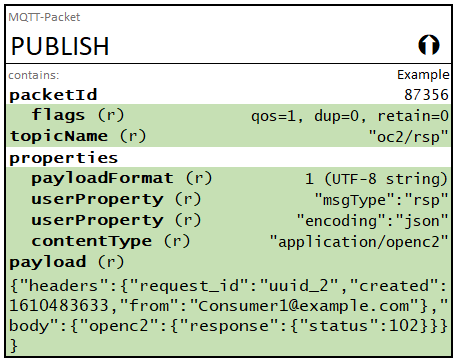

https://docs.oasis-open.org/openc2/transf-mqtt/v1.0/cs01/transf-mqtt-v1.0-cs01.md (Authoritative)
https://docs.oasis-open.org/openc2/transf-mqtt/v1.0/cs01/transf-mqtt-v1.0-cs01.html
https://docs.oasis-open.org/openc2/transf-mqtt/v1.0/cs01/transf-mqtt-v1.0-cs01.pdf
https://docs.oasis-open.org/openc2/transf-mqtt/v1.0/csd04/transf-mqtt-v1.0-csd04.md (Authoritative)
https://docs.oasis-open.org/openc2/transf-mqtt/v1.0/csd04/transf-mqtt-v1.0-csd04.html
https://docs.oasis-open.org/openc2/transf-mqtt/v1.0/csd04/transf-mqtt-v1.0-csd04.pdf
https://docs.oasis-open.org/openc2/transf-mqtt/v1.0/transf-mqtt-v1.0.md (Authoritative)
https://docs.oasis-open.org/openc2/transf-mqtt/v1.0/transf-mqtt-v1.0.html
https://docs.oasis-open.org/openc2/transf-mqtt/v1.0/transf-mqtt-v1.0.pdf
OASIS Open Command and Control (OpenC2) TC
Duncan Sparrell (duncan@sfractal.com), sFractal Consulting
David Lemire (david.lemire@hii-tsd.com), National Security Agency
This specification is related to:
Open Command and Control (OpenC2) is a concise and extensible language to enable the command and control of cyber defense components, subsystems and/or systems in a manner that is agnostic of the underlying products, technologies, transport mechanisms or other aspects of the implementation. Message Queuing Telemetry Transport (MQTT) is a widely-used publish / subscribe (pub/sub) transfer protocol. This specification describes the use of MQTT Version 5.0 as a transfer mechanism for OpenC2 messages.
This document was last revised or approved by the OASIS Open Command and Control (OpenC2) TC on the above date. The level of approval is also listed above. Check the "Latest stage" location noted above for possible later revisions of this document. Any other numbered Versions and other technical work produced by the Technical Committee (TC) are listed at https://www.oasis-open.org/committees/tc_home.php?wg_abbrev=openc2#technical.
TC members should send comments on this specification to the TC's email list. Others should send comments to the TC's public comment list, after subscribing to it by following the instructions at the "Send A Comment" button on the TC's web page at https://www.oasis-open.org/committees/openc2/.
This specification is provided under the Non-Assertion Mode of the OASIS IPR Policy, the mode chosen when the Technical Committee was established. For information on whether any patents have been disclosed that may be essential to implementing this specification, and any offers of patent licensing terms, please refer to the Intellectual Property Rights section of the TC's web page (https://www.oasis-open.org/committees/openc2/ipr.php).
Note that any machine-readable content (Computer Language Definitions) declared Normative for this Work Product is provided in separate plain text files. In the event of a discrepancy between any such plain text file and display content in the Work Product's prose narrative document(s), the content in the separate plain text file prevails.
The key words "MUST", "MUST NOT", "REQUIRED", "SHALL", "SHALL NOT", "SHOULD", "SHOULD NOT", "RECOMMENDED", "NOT RECOMMENDED", "MAY", and "OPTIONAL" in this document are to be interpreted as described in BCP 14 [RFC2119] and [RFC8174] when, and only when, they appear in all capitals, as shown here.
When referencing this specification the following citation format should be used:
[OpenC2-MQTT-v1.0]
Specification for Transfer of OpenC2 Messages via MQTT Version 1.0. Edited by David Lemire. 19 November 2021. OASIS Committee Specification 01. https://docs.oasis-open.org/openc2/transf-mqtt/v1.0/cs01/transf-mqtt-v1.0-cs01.html. Latest stage: https://docs.oasis-open.org/openc2/transf-mqtt/v1.0/transf-mqtt-v1.0.html
Copyright © OASIS Open 2021. All Rights Reserved.
Distributed under the terms of the OASIS IPR Policy.
The name "OASIS" is a trademark of OASIS, the owner and developer of this specification, and should be used only to refer to the organization and its official outputs.
For complete copyright information please see the Notices section in an Appendix below.
This section is non-normative.
OpenC2 is a suite of specifications that enables command and control of cyber defense systems and components. OpenC2 typically uses a request-response paradigm where a request (i.e., command) is encoded by an OpenC2 Producer (managing application) and transferred to one or more OpenC2 Consumers (managed devices or virtualized functions) using a secure transfer protocol. The Consumers act on the request and respond with status and any other requested information.
This specification describes OpenC2's use of the MQTT publish / subscribe messaging protocol to exchange OpenC2 messages between Producers and Consumers. Version 5 of the MQTT Specification [MQTT-v5.0] is used as it includes features useful for OpenC2 that are not available in the previous version [MQTT v3.1.1].
The following changes have been implemented since WD08:
Response Topic featureThe terms defined in Section 1.2, Terminology, of the MQTT v5.0 specification [MQTT-v5.0] are applicable to this specification.
The following terms defined in Section 1.2, Terminology, of the OpenC2 Language Specification [OpenC2-Lang-v1.0] are applicable to this specification:
| Acronym | Meaning |
|---|---|
| AKA | Also Known As |
| AP | Actuator Profile |
| JSON | JavaScript Object Notation |
| MQTT | Message Queuing Telemetry Transport |
| RFC | Request For Comment |
User Property).The following color, font and font style conventions are used in this document:
fixed-width font is used for all type names, property names, and literals.Section 1.5 of the MQTT v5.0 specification [MQTT-v5.0] defines data types relevant to the protocol. Implementations of this specification are assumed to encode and decode those data types as defined in the MQTT specification.
In this specification, the UTF-8 String Pair data type ([MQTT-v5.0], section 1.5.7) is of particular interest, as MQTT v5.0 User Properties are utilized. Within this document, the representation for a UTF-8 String Pair User Property is "key":"value".
Per the MQTT specification sections 1.5.4 and 1.5.7 each string is encoded with a 2-byte length followed by the UTF-8 encoding of the string, so the general form of a User Property as a UTF-8 String Pair is:
[0x26]For the "key:value" example above, the encoding would be:
[0x26][0x00][0x03]key[0x00][0x05]value
This section is non-normative in its entirety.
This section provides an overview of the approach to employing MQTT as a message transfer protocol for OpenC2 messages.
When transferring OpenC2 Request (AKA command) and Response messages via MQTT, both Producers and Consumers act as both publishers and subscribers:
The MQTT client software used by Producers and Consumers and all MQTT brokers used for OpenC2 message transfer are beyond the scope of this specification, but are assumed to be conformant with the MQTT v5.0 specification [MQTT-v5.0]. In the context of OpenC2, and in accordance with the Terminology section (1.2) of [MQTT-V5.0]:
Brokers facilitate the transfer of OpenC2 messages but in their role as Brokers do not act in any OpenC2 role.
The MQTT topic structure described in Table 2-1 is used to exchange OpenC2 messages. The "oc2" prefix on the topic names segregates OpenC2-related topics from other topics that might exist on the same broker. Topic name components in brackets (e.g., [actuator_profile]) are placeholders for specific values that would be used in implementation. For example, a device that implements the Stateless Packeting Filter AP would subscribe to oc2/cmd/ap/slpf. In addition, each Consumer subscribes to its own device-specific topic using a device identifier (annotated as [device_id]) that is assumed to be known to the OpenC2 Producer(s) that can command that Consumer. The determination of device identifiers is beyond the scope of this specification.
| Topic | Purpose | Producer | Consumer |
|---|---|---|---|
oc2/cmd/all |
Used to send OpenC2 commands to all devices connected to this MQTT fabric. | Pub | Sub |
oc2/cmd/ap/[actuator_profile] |
Used to send OpenC2 commands to all instances of specified Actuator Profile. | Pub | Sub |
oc2/cmd/device/[device_id] |
Used to send OpenC2 commands to a specific device. Routing to APs within the device is a local matter. | Pub | Sub |
oc2/rsp |
Used to return OpenC2 response messages. | Sub | Pub |
oc2/rsp/[producer_id] |
Used to return OpenC2 response messages to a specific producer. | Sub | Pub |
In order to receive commands intended for its security functions, a Consumer device connected to the broker would subscribe using the following topic filters:
oc2/cmd/all to receive commands intended for all devicesoc2/cmd/ap/[acutator_profile] for all actuator profiles the device implementsoc2/cmd/device/[device_id] for that device's IDIn order to receive responses to the commands it sends, a Producer connected to the broker would subscribe using the following topic filters:
oc2/rspoc2/rsp/[producer_id]A Producer subscribing to oc2/rsp/# would receive all response messages published through the broker to any specific [producer-id], regardless of whether the response was to a command originated by the subscribing producer.
The inclusion of predefined response topics in the default topic scheme eliminates any need for an OpenC2 Producer to use the PUBLISH control packet's Response Topic header (described in MQTTv5 sections 3.3.2.3.5 and 4.10) to inform Consumers where to direct reply messages. The Response Topic field is not used for OpenC2 messaging over MQTT.
Topic wildcards are not normally utilized for OpenC2 but their use is not precluded. For example, implementers of OpenC2 Consumers might elect to use a wildcard to subscribe to the command topics for all actuator profiles (oc2/cmd/ap/#) and filter received messages at the Consumer to identify relevant messages. An OpenC2 traffic logger might subscribe to oc2/#.
Non-normative Subscription Example
A notional OpenC2 Consumer that implements actuator profiles alpha and iota and has a device identifier of zulu would subscribe using the following topic filters:
oc2/cmd/alloc2/cmd/ap/alphaoc2/cmd/ap/iotaoc2/cmd/device/zuluA notional OpenC2 Producer with a device identifier of omega would subscribe using the following topic filters:
oc2/rspoc2/rsp/omegaNon-normative Publishing Examples
Under typical circumstances, the publishing of OpenC2 commands is either a 1:n situation (one Producer commanding multiple Consumers) or a 1:1 situation (one Producer commands a specific Consumer). The publishing of responses represents the reverse situation, where responses published by potentially numerous Consumers are all directed to a single Producer.
A notional OpenC2 Producer wishing to command all Consumers that implement actuator profile iota would publish the command to:
oc2/cmd/ap/iotaA notional OpenC2 Producer wishing to command the individual Consumer with identity zulu would publish the command to:
oc2/cmd/device/zuluAdditional examples of publishing exchanges can be found in Appendix E.
For each Topic Filter in the SUBSCRIBE control packet the Client specifies a set of Subscription Options (MQTT-V5.0 specification section 3.8.3.1). The available options are:
Maximum QoS: the maximum QoS level at which the Server can send Application Messages to the ClientNo Local: controls whether messages the Client publishes to this topic are published back to themRetain as Published: Controls the setting of the retain flag in messages forwarded under this subscriptionRetain Handling: Specifies how retained messages present on the Broker when the subscription is established are handledThe following values are recommended for Subscription Options for OpenC2 applications:
Maximum QoS: 2 -- allow the publisher to set the QoS level of the messageNo Local: 1 -- do not receive back messages published by this Client on this topicRetain as Published: 1 -- respect the publisher's retain setting value when forwarding messagesRetain Handling: 0 -- broker should send any retained messages when the subscription is establishedThis section describes how OpenC2 messages are represented in MQTT PUBLISH control packets.
OpenC2 messages are conveyed in the payload of MQTT PUBLISH control packets. As described in the MQTT-V5.0 specification section 3.3.3: "the content and format of the data is application specific" and therefore meaningless to the Broker. OpenC2 uses the following MQTT PUBLISH control packet properties to convey essential information about the message to the recipient:
Payload Format Indicator [Property 0x01]: This property is used to distinguish binary vs. UTF-8 encoded strings for the payload format, as specified in section 3.3.2.3.2 of the MQTT specification, and should be set as appropriate for the message serialization used.
Content Type [Property 0x03]: a UTF-8 Encoded String describing the content of the Application Message. For OpenC2 messages, the string "application/openc2" is used.
User Property [Property 0x26]: two User Properties (UTF-8 string pairs) are defined to further specify the message format:
"msgType": a UTF-8 string used to identify the type of OpenC2 message, as described in section 3.2 of the OpenC2 Language Specification. Legal values are:
"req" (request),"rsp" (response), or"ntf" (notification)"encoding": a UTF-8 string used to identify the specific text or binary encoding of the message. Legal values are:
"json", and"cbor"The specifics of serializing OpenC2 messages are defined in other OpenC2 specifications.
OpenC2 messages transferred using MQTT utilize the OpcenC2-Message structure defined in Section 3.2 of OpenC2-Lang-v1.0.
Message = Record
1 headers Headers optional
2 body Body
3 signature String optional
Headers = Map{1..*}
1 request_id String optional
2 created ls:Date-Time optional
3 from String optional
4 to String [0..*]
Body = Choice
1 openc2 OpenC2-Content
OpenC2-Content = Choice
1 request OpenC2-Command
2 response OpenC2-Response
3 notification OpenC2-Event
A Producer sending an OpenC2 request always includes its identifier in the message headers from field, allowing receiving Consumers to know the origin of the request. A Consumer sending a response to an OpenC2 request always includes its identifier in the message headers from field, allowing responses to the same request from different Consumers to be identified by the Producer receiving the responses.
When publishing an OpenC2 request, the Producer can use the message headers to field as a filter to provide finer-grained control over which Consumers should process any particular message than is provided by the MQTT Topic Structure and Client topic subscriptions. Consumers have no requirement to populate the message headers to field.
MQTT-v5.0 Section 4.3, Quality of Service Levels and Protocol Flows, defines three quality of service (QoS) levels:
QoS 1 is appropriate for most OpenC2 applications and should be specified as the default. Implementers have the option of electing to use QoS 2 where the additional overhead is justified by application requirements. QoS 0 is not recommended for use in OpenC2 messaging.
In accordance with the above, the requirements of MQTT-v5.0 Section 4.3.2, QoS 1: At least once delivery, apply to OpenC2 Producers and Consumers when publishing messages to the MQTT broker.
As described in MQTT-v5.0 Section 4.6, Message Ordering, the use of QoS 1 assures that "the final copy of each message received by the subscribers will be in the order that they were published" but does not preclude the possibility of duplicate message delivery. OpenC2 Producers and Consumers implementations should be prepared to respond sensibly if duplicate requests or responses are received.
As described in MQTT-v5.0, Section 3.1, CONNECT – Connection Request, the Client Identifier (ClientID) is a required field in the CONNECT control packet. Further requirements are contained in Section 3.1.3.1, Client Identifier (ClientID), which defines the ClientID as a UTF-8 string between 1 and 23 bytes long containing only letters and numbers (MQTT servers may accept longer ClientIDs). The MQTT specification also permits brokers to accept CONNECT control packets without a ClientID, in which case the broker assigns its own ClientID to the connection, which the client is obligated to use. MQTT-v5.0 provides no further definition regarding the format or assignment of ClientIDs.
The ClientID serves to identify the client to the broker so that the broker can maintain state information about the client. The ClientID has no meaning in the context of OpenC2, it is only meaningful to the MQTT client and broker involved in the connection.
OpenC2 Producers and Consumers using MQTT for message transfer should generate and store a random ClientID value that meets the constraints specified in MQTT-v5.0 Section 3.1.3.1, and retain that value for use when establishing connections to a broker. This ClientID should be generated prior to any connection to an MQTT broker, potentially as part of an initialization process. The ClientID for an OpenC2 Consumer is not required to have any meaningful relationship to any identity by which a Producer identifies that Consumer in OpenC2 messages.
As described in MQTT-v5.0 Section 3.1.3.1, if a broker receives a CONNECT control packet with a zero-byte-length ClientID, the broker must generate a ClientID and return it to the connecting client in the associated CONNACK packet for the client's use. When using MQTT to transfer OpenC2 messages, the preferred behavior is for the client supporting the OpenC2 Producer or Consumer to generate its own ClientID.
The MQTT CONNECT control packet includes a Keep Alive property (MQTT-v5.0 section 3.1.2.10) that defines a time interval within which a Client connected to a Broker is expected to send a control packet of any type to the Broker to prevent the Broker from disconnecting from the Client. The PINGREQ control packet can be sent if the Client has no other traffic to process. The MQTT specification notes that "The actual value of the Keep Alive is application specific; typically this is a few minutes. The maximum value is 18 hours 12 minutes and 15 seconds." Per the MQTT specification the Broker will close the network connection if 1.5 times the Keep Alive interval has passed without receiving a control packet from the Client.
This transfer specification leaves the selection of a Keep Alive interval to the implementer but defines a value of 5 minutes (300 seconds) as the maximum value for conformant implementations. For reliability, it is recommended that an OpenC2 client send an MQTT PINGREQ when 95% of the Keep Alive interval has expired without any other control packets being exchanged.
The CONNECT control packet, described in MQTT-v5.0, Section 3.1, provides a Will Message feature that enables connected clients to store a message on the broker to be published to a client-specified topic when the client's network connection is closed. OpenC2 does not use the MQTT Will Message feature.
As described in MQTT-v5.0, section 3.1.2.4, Clean Start, the MQTT CONNECT control packet includes a flag, Clean Start, that tells the broker whether the client, identified by its ClientID as described in Section 2.6, desires a new session (Clean Start equals 1 [true]). In MQTT the setting of the Clean Start flag and the value of the Session Expiry Interval from the most recent CONNECT packet are relevant to how the broker handles client state. The behavior is summarized in Table 2-2.
| Session Expiry Interval Exceeded | |||
|---|---|---|---|
| Yes | No | ||
| Clean Start Flag |
True (1) |
|
|
| False (0) |
|
|
|
OpenC2 clients should not request a clean start when connecting to the broker. The use of Clean Start = false allows the broker to retain the client's subscriptions, and deliver buffered messages that have accumulated while the client was disconnected. However, OpenC2 implementers using MQTT should be aware that MQTT broker resource constraints and Message Expiry Interval settings from Producers may cause older traffic to be discarded if clients are disconnected for extended periods.
The MQTT v5.0 CONNECT control packet includes a Session Expiry Interval property that informs the broker how long the Client's session state is to be retained when the session is disconnected. The MQTT v5.0 PUBLISH control packet includes a Message Expiry Interval property that specifies the lifetime of the Application Message in seconds. This transfer specification makes no recommendations regarding appropriate values for either expiry interval. Implementers are encouraged to evaluate their use cases to define reasonable values for these properties.
This section defines specific requirements for populating MQTT control packets. Values for fields and properties not specified herein are to be populated as defined in the MQTT v5.0 specification, or as determined by the implementer where applicable.
OpenC2 Producers and Consumers MUST create and transmit the CONNECT control packet, as specified in the MQTT v5.0 specification section 3.1, to establish a connection to the MQTT Broker.
OpenC2 Producers and Consumers MUST populate the following CONNECT control packet fields as specified:
Clean Start = FALSEWill Flag = FALSEWill QoS = 0 (zero)Will Retain = FALSEKeep Alive = Number <= 300 (seconds)Client Identifier = client-generated identifier stringOpenC2 Producers and Consumers MUST NOT populate any of the CONNECT payload fields related to the MQTT Will Message.
This specification makes no recommendations regarding values for the following CONNECT properties:
Authentication MethodAuthentication DataRequest Problem InformationReceive MaximumSession ExpiryTopic Alias MaximumMaximum Packet SizeUsername flagPassword flagOpenC2 Producers and Consumers MUST create and transmit the PUBLISH control packet, as specified in the MQTT v5.0 specification section 3.3, to publish messages using the MQTT broker.
Topic selection for publishing OpenC2 request and response messages MUST apply the default topic structure principles described in Section 2.2 of this specification.
OpenC2 Producers and Consumers MUST populate the following PUBLISH control packet fields as specified:
QoS = 1 (minimum, 2 of so determined by the implementer)Retain = 0 (FALSE)Payload Format Indicator
01"application/openc2""msgType":[type] where
[type] = "req" when publishing OpenC2 requests[type] = "rsp" when publishing OpenC2 responses[type] = "ntf" when publishing OpenC2 notifications"encoding":[encoding] where
[encoding] = "json" for JSON-encoded messages using UTF-8[encoding] = "cbor" for CBOR-encoded binary messagesOpenC2 Producers and Consumers MUST populate the PUBLISH control packet payload with an OpenC2 message of type specified by the "msgType":[type] User Property, encoded as specified by the "encoding":[encoding] User Property.
OpenC2 Producers and Consumers MUST populate the from: field of the OpenC2 message with the identity of the publisher of the message, as described in Section 2.4.2.
OpenC2 Producers MUST NOT use the MQTT PUBLISH control packet's Response Topic header when publishing OpenC2 request messages. OpenC2 Consumers MUST publish responses to the defined response topics described in Section 2.2.
NOTE: the preceding prohibition applies only to the use of
Response Topicin OpenC2 messaging and does not apply to other MQTT messaging by clients associated with OpenC2 Producers and Consumers.
This specification makes no recommendations regarding values for the following PUBLISH control packet properties:
Message Expiry IntervalCorrelation DataSubscription IdentifierTopic AliasProducers and Consumers MUST use the SUBSCRIBE control packet, as specified in the MQTT v5.0 specification section 3.8 to subscribe to a set of topics consistent with the default topic structure defined in Section 2.2 of this specification. This means that:
oc2/cmd/all), andoc2/cmd/device/[device_id]).oc2/rsp).oc2/rsp/[producer_id])When subscribing to topics OpenC2 Producers and Consumers SHOULD populate subscription options for each topic as follows:
Maximum QoS: 2No Local: 1 (true)Retain as Published: 1Retain Handling: 0As defined in Section 2.5 of this specification, subscribers MUST specify a Maximum QoS level of at least 1 when subscribing to topics. Implementers SHOULD allow for a Maximum QoS of 2 if supported by their implementation. As noted in Section 2.5, when messages are published with a QoS of 1 receiving clients should be prepared to handle the possibility of receiving duplicate messages.
This specification makes no recommendations regarding values for the following SUBSCRIBE properties:
Subscription IdentifierOpenC2 Producers and Consumers MUST send a PINGREQ control packet to all MQTT brokers with which they are connected if they have not processed any other control packets with 95% of the keep-alive interval defined by the implementer. If the implementer has not otherwise specified a keep-alive interval, 95% of the value specified in Section 2.7 of this specification shall be used.
This specification makes no requirements or recommendations regarding the use of the following MQTT control packets:
As required OpenC2 Producers and Consumers MUST create and transmit or receive and process these control packets as specified in their respective sections of the MQTTv5.0 specification.
An OpenC2 MQTT client conforms to this specification only if it satisfies all of the statements below:
This appendix contains the normative and informative references that are used in this document. Normative references are specific (identified by date of publication and/or edition number or version number) and Informative references are either specific or non-specific.
While any hyperlinks included in this appendix were valid at the time of publication, OASIS cannot guarantee their long-term validity.
The following documents are referenced in such a way that some or all of their content constitutes requirements of this document.
Bradner, S., "Key words for use in RFCs to Indicate Requirement Levels", BCP 14, RFC 2119, DOI 10.17487/RFC2119, March 1997, http://www.rfc-editor.org/info/rfc2119.
Dierks, T. and E. Rescorla, "The Transport Layer Security (TLS) Protocol Version 1.2", RFC 5246, DOI 10.17487/RFC5246, August 2008, <https://www.rfc-editor.org/info/rfc5246>.
Sheffer, Y., Holz, R., and P. Saint-Andre, "Recommendations for Secure Use of Transport Layer Security (TLS) and Datagram Transport Layer Security (DTLS)", BCP 195, RFC 7525, DOI 10.17487/RFC7525, May 2015, https://www.rfc-editor.org/info/rfc7525.
Belshe, M., Peon, R., and M. Thomson, Ed., "Hypertext Transfer Protocol Version 2 (HTTP/2)", RFC 7540, DOI 10.17487/RFC7540, May 2015, https://www.rfc-editor.org/info/rfc7540.
Leiba, B., "Ambiguity of Uppercase vs Lowercase in RFC 2119 Key Words", BCP 14, RFC 8174, DOI 10.17487/RFC8174, May 2017, http://www.rfc-editor.org/info/rfc8174.
Bray, T., ed., "The JavaScript Object Notation (JSON) Data Interchange Format", STD 90, RFC 8259, DOI 10.17487/RFC8259, December 2017, http://www.rfc-editor.org/info/rfc8259
Rescorla, E., "The Transport Layer Security (TLS) Protocol Version 1.3", RFC 8446, DOI 10.17487/RFC8446, August 2018, <http://www.rfc-editor.org/info/rfc8446>
Open Command and Control (OpenC2) Language Specification Version 1.0. Edited by Jason Romano and Duncan Sparrell. Latest version: https://docs.oasis-open.org/openc2/oc2ls/v1.0/oc2ls-v1.0.html.
MQTT Version 5.0. Edited by Andrew Banks, Ed Briggs, Ken Borgendale, and Rahul Gupta. 07 March 2019. OASIS Standard. https://docs.oasis-open.org/mqtt/mqtt/v5.0/os/mqtt-v5.0-os.html. Latest version: https://docs.oasis-open.org/mqtt/mqtt/v5.0/mqtt-v5.0.html.
Rescorla, E. and B. Korver, "Guidelines for Writing RFC Text on Security Considerations", BCP 72, RFC 3552, DOI 10.17487/RFC3552, July 2003, https://www.rfc-editor.org/info/rfc3552.
M. J. Herring, K. D. Willett, "Active Cyber Defense: A Vision for Real-Time Cyber Defense," Journal of Information Warfare, vol. 13, Issue 2, p. 80, April 2014.
Willett, Keith D., "Integrated Adaptive Cyberspace Defense: Secure Orchestration", International Command and Control Research and Technology Symposium, June 2015.
MQTT Version 3.1.1. Edited by Andrew Banks and Rahul Gupta. 29 October 2014. OASIS Standard. http://docs.oasis-open.org/mqtt/mqtt/v3.1.1/os/mqtt-v3.1.1-os.html. Latest version: http://docs.oasis-open.org/mqtt/mqtt/v3.1.1/mqtt-v3.1.1.html.
Open Command and Control (OpenC2) Profile for Stateless Packet Filtering Version 1.0. Edited by Joe Brule, Duncan Sparrell and Alex Everett. 11 July 2019. Committee Specification 01. https://docs.oasis-open.org/openc2/oc2slpf/v1.0/cs01/oc2slpf-v1.0-cs01.html. Latest version: https://docs.oasis-open.org/openc2/oc2slpf/v1.0/oc2slpf-v1.0.html.
Eclipse Foundation, "Sparkplug (TM) MQTT Topic & Payload Definition", Version 2.2, October 2019, https://www.eclipse.org/tahu/spec/Sparkplug%20Topic%20Namespace%20and%20State%20ManagementV2.2-with%20appendix%20B%20format%20-%20Eclipse.pdf
Eclipse Foundation Paho MQTT Client Library, https://www.eclipse.org/paho/
For operational use transferring OpenC2 messages, all connections between OpenC2 endpoint (i.e., Producer and Consumer) MQTT clients and brokers MUST use Transport Layer Security (TLS). Endpoint MQTT clients and MQTT brokers used for OpenC2 messaging MUST support TLS version 1.2 [RFC5246] connections or higher for confidentiality, integrity, and authentication when sending OpenC2 Messages over MQTT, and SHOULD support TLS Version 1.3 [RFC8446] or higher connections.
OpenC2 endpoint MQTT clients and MQTT brokers MUST NOT support any version of TLS prior to v1.2 and MUST NOT support any version of Secure Sockets Layer (SSL).
The implementation and use of TLS SHOULD align with the best currently available security guidance, such as that provided in [RFC7525]/BCP 195.
The TLS session MUST use non-NULL ciphersuites for authentication, integrity, and confidentiality. Sessions MAY be renegotiated within these constraints.
OpenC2 endpoint MQTT clients supporting TLS v1.2 MUST NOT use any of the blacklisted ciphersuites identified in Appendix A of [RFC7540].
OpenC2 endpoint MQTT clients supporting TLS 1.3 MUST NOT implement zero round trip time resumption (0-RTT).
This specification recommends that the mechanisms available in MQTT v5.0 be given preference for implementing enhanced authentication of OpenC2 endpoints.
OpenC2 messaging over unsecured MQTT connections SHOULD be restricted to non-operational testing purposes.
The editor thanks the members of the Huntington-Ingalls Industries OpenC2 software team for their assistance with prototyping the capabilities defined in this specification:
The following OpenC2 TC members are acknowledged for providing comments, suggested text, and/or participation in CSD ballots or face-to-face meetings during the development of this specification:
| Revision | Date | Editor | Changes Made |
|---|---|---|---|
| WD01 | 2020-05-14 | David Lemire | Initial working draft |
| WD02 | 2020-06-02 | David Lemire | Updates Operating Model section (2.0) and list of questions to be resolved. |
| WD03 | 2020-06-15 | David Lemire | Further updates Operating Model section (2.0) and list of questions to be resolved. Initial presentation of example operating sequences and message. Presented as a CSD candidate at the 17 June 2020 TC meeting. |
| WD03 / CSD01 | 2020-07-07 | David Lemire | WD03 approved by OpenC2 TC as CSD01 |
| WD04 | 2020-09-15 | David Lemire | Further updates Operating Model section (2.0) and list of questions to be resolved. Updated presentation of example operating sequences and messages. Initial presentation of specifics for MQTT control packet types. Presented as a CSD candidate at the 16 September 2020 TC meeting. |
| WD04 / CSD02 | 2020-09-24 | David Lemire | WD04 approved as CSD02 by electronic ballot |
| WD05 | 2021-01-19 | David Lemire | Specification updated to use MQTT v5.0 in place of MQTT v3.1.1. |
| WD06 | 2021-02-08 | David Lemire | Refinements from WD05. Candidate for CSD at February 2021 TC meeting. Was uploaded without updating revision history |
| WD07 | 2021-02-08 | David Lemire | Revision History table and WD number updated. |
| CSD03 | 2021-02-25 | David Lemire | Publication of CSD03 based on WD07. |
| WD08 | 2021-04-15 | David Lemire | Restructured to new OASIS template; Added "DENY" example; Remove unncessary level of indenture in Section 3; Move topic wildcard discussion to Section 2.2; Numerous small edits |
| WD09 | 2021-08-13 | David Lemire | Simplified presentation of protocol requirements in Section 3; Added paho python client example; Removed operating model working questions; Enhanced example graphics to highlight requirements from this specification; Added conformance section; Added prohibition against use of MQTT Response Topic feature;Populated Appendix C. Acknowledgments; Numerous small edits and corrections |
| WD10 | 2021-10-13 | David Lemire | Incorporates non-material changes based on public review comments for CSD04 (based on WD09). |
This appendix is non-normative in its entirety.
MQTT control packet examples in this appendix present packet contents relevant to the function(s) being illustrated but do not include all required control packet contents (e.g., computed length fields are not listed, bitmapped flags are written out to convey intent rather than presented as bitmaps). Packet examples use a color code to distinguish fields populated based on requirements contained in this specification from fields left to the implementer's discretion or based on requirements from the MQTTv5.0 specification, as follows:
(r) appended to the field name in control packet illustrations indicates the value for that field is required, based on MUST/SHALL requirements contained in this specification.(s) appended to the field name in control packet illustrations indicates the value for that field is suggested, based on MAY/SHOULD requirements contained in this specification.This notation is illustrated in Figure E-1.
The OpenC2 Language Specification defines the from and to fields in OpenC2 messages as strings containing "Authenticated identifier of the creator of or authority for execution of a message." No further definition is provided regarding the content of the from and to strings. The examples in this Appendix populate these fields with notional Producer and Consumer email addresses for convenience and readability.
The message format in the OpenC2 Language Specification includes a request_id used to distinguish messages, and the recommended content for the request_id is a UUID v4. The examples in this appendix use uuid_x, where x is a number, as a shorthand for actual UUIDs, which should be used in operation.
This example illustrates the message flows involved in the process of a Producer (i.e., an Orchestrator) and a Consumer each connecting to the MQTT broker as clients and subscribing to the appropriate channels for each, in accordance with the default topic model. The message flows are depicted in Figure E-2. The Producer is assigned the username orch01. The Consumer is assigned the username zulu01 and supports the notional actuator profiles alpha and iota. No OpenC2-specific content appears in any of the messages required for this example.
This example illustrates the following aspects of the operating model:

The Producer and Consumer CONNECT packets for this example are as follows; the optional username and password fields of the CONNECT packets are populated in this example:

The Consumer SUBSCRIBE and Broker SUBACK packets for this example are shown below; Subscription Options are populated as specified in section 3.3 of this specification:

This example illustrates the message flows that occur for a notional but common process of an OpenC2 Producer publishing an OpenC2 request to multiple Consumers. The focus of this example is the use of MQTT PUBLISH and PUBACK control packets for the message flows. No meaningful OpenC2 content appears in any of the messages in this example.
In the example an OpenC2 Producer publishes a command to the channel for a notional actuator profile, iota. The example assumes the existence of two notional Consumers identified as Xray and Zulu that both implement the iota AP, and that both Consumers are subscribed to the corresponding command topic oc2/cmd/ap/iota. The example messages first show the exchange between the Producer publishing the Openc2 request and the MQTT broker. A similar exchange then occurs between the broker and every Consumer device subscribed to the oc2/cmd/ap/iota topic to distribute the command to the intended recipients. While the OpenC2 request in this example is only notional, the example assumes the response_requested argument is omitted from the request message so the consumers exhibit the OpenC2 default behavior of sending a complete response.
The command and response messages in the sequence diagram shown in Figure E-3 are published with a QoS of 1, which requires the recipient to respond to the PUBLISH packet with a PUBACK packet.
This example illustrates the following aspects of the operating model:

The PUBLISH and PUBACK control packets for the command portion of this example are illustrated below. The packet contents between the Producer and the Broker, and between the Broker and the Consumers are the same in each PUBLISH / PUBACK exchange, with the exception that the packetId field will differ for each of the three publishing exchanges in Figure E-3, as that value is assigned by the initiator of each exchange. The payload of "(JSON-encoded openc2 request)" is a placeholder for a meaningful OpenC2 request message.

This example illustrates the packaging of OpenC2 requests in MQTT PUBLISH control packets. The scenario is a request containing an OpenC2 query action sent over MQTT to retrieve the list of actuator profiles supported by a set of Consumers. This example includes three Consumers that implement several different actuator profiles, as follows:
slpf)slpf and ids)edr and sbom)NOTES:
response_requested argument is omitted from the query request message so the Consumers exhibit the default behavior of sending a complete response.This example illustrates the following aspects of the operating model:
The Producer initiates this process by publishing a query request to oc2/cmd/all. The OpenC2 request message contents and corresponding MQTT PUBLISH control packet are shown below, followed by the Consumer replies. The PUBLISH control packet fields and OpenC2 message content that varies among the packets is shown in red in the packet examples for clarity, and the JSON nessages in the control packet payloads use condensed formatting (white space minimized).
The following OpenC2 request message is published by the Producer and delivered to all Consumers subscribed to oc2/cmd/all.
{
"headers": {
"request_id": "uuid_1",
"created": 1610483630,
"from": "Producer1@example.com"
},
"body": {
"openc2": {
"request": {
"action": "query",
"target": {
"features": [
"profiles"
]
}
}
}
}
}
The consumer responses are as follows:
Consumer 1:
The following OpenC2 response message is published by Consumer 1 and delivered to the Producer on the oc2/rsp topic.
{
"headers": {
"request_id": "uuid_1",
"created": 1610483633,
"from": "Consumer1@example.com"
},
"body": {
"openc2": {
"response": {
"status": 200,
"results": {
"profiles": [
"slpf"
]
}
}
}
}
}
Consumer 2:
The following OpenC2 response message is published by Consumer 2 and delivered to the Producer on the oc2/rsp topic.
{
"headers": {
"request_id": "uuid_1",
"created": 1610483632,
"from": "Consumer2@example.com"
},
"body": {
"openc2": {
"response": {
"status": 200,
"results": {
"profiles": [
"slpf",
"ids"
]
}
}
}
}
}
Consumer 3:
The following OpenC2 response message is published by Consumer 2 and delivered to the Producer on the oc2/rsp topic.
{
"headers": {
"request_id": "uuid_1",
"created": 1610483632,
"from": "Consumer3@example.com"
},
"body": {
"openc2": {
"response": {
"status": 200,
"results": {
"profiles": [
"edr",
"sbom"
]
}
}
}
}
}

This example illustrates the execution of a common OpenC2 requests using MQTT PUBLISH control packets. The example is a deny action for a particular IP connection, as described in the Stateless Packet Filtering AP, Section A.1.1. This example primarily indicates the content of the PUBLISH control packets. For simplicity the exchange illustrated only includes one Producer and one Consumer.
NOTES:
response_requested argument is omitted from the query request message so the Consumers exhibit the default behavior of sending a complete response.This example illustrates the following aspects of the operating model:
The Producer initiates this process by publishing a deny request to oc2/cmd/slpf. The OpenC2 request message contents and corresponding MQTT PUBLISH control packet are shown below, followed by the Consumer reply.The JSON nessages in the control packet payloads use condensed formatting (white space minimized).
The following OpenC2 request message is published by the Producer and delivered to all Consumers subscribed to oc2/cmd/slpf.
{
"headers": {
"request_id": "uuid_2",
"created": 1610483630,
"from": "Producer1@example.com"
},
"body": {
"openc2": {
"request": {
"action": "deny",
"target": {
"ipv4_connection": {
"protocol": "tcp",
"src_addr": "1.2.3.4",
"src_port": 10996,
"dst_addr": "198.2.3.4",
"dst_port": 80
}
},
"args": {
"start_time": 1534775460000,
"duration": 500,
"response_requested": "ack",
"slpf": {
"drop_process": "none"
}
},
"actuator": {
"slpf": {
"asset_id": "30"
}
}
}
}
}
}

The following OpenC2 response message is published by the Consumer 1 and delivered to the Producer on the oc2/rsp topic.
{
"headers": {
"request_id": "uuid_2",
"created": 1610483633,
"from": "Consumer1@example.com"
},
"body": {
"openc2": {
"response": {
"status": 102
}
}
}
}
This set of examples illustrates the use of the paho python MQTT client to utilize MQTTv5 as described in this specification. The paho client documentation [https://pypi.org/project/paho-mqtt/] currently does not include explanations for how to access MQTTv5 features, so this example has been constructed based on examination of the client source [https://github.com/eclipse/paho.mqtt.python/tree/master/src/paho/mqtt].
As described in the client documentation, the basic approach to using the paho client is:
The paho client’s MQTTv5 features also depend on the use of the Properties class to specify properties to include in the PUBLISH packet, and the SubscribeOptions class to specify the appropriate options when subscribing to topics.
This example focuses on those aspects of client use that leverage MQTTv5 features, and does not attempt to illustrate a complete working solution.
This example illustrates the process of connecting to an MQTT broker and subscribing to topic filters appropriate for a client that implements the stateless packet filter actuator profile (AP). The example illustrates the following aspects of the operating model:
Clean Start flag set to false, Section 2.9import json
import ssl
from typing import Any, Dict
from paho.mqtt import client as mqtt
from paho.mqtt.properties import Properties
# MQTT functions
def mqtt_on_connect(client: mqtt.Client, userdata: Any, flags: dict, rc: int, properties: Properties = None) -> None:
"""
MQTT Callback for when client receives connection-acknowledgement response from MQTT server.
:param client: Class instance of connection to server
:param userdata: User-defined data passed to callbacks
:param flags: Response flags sent by broker
:param rc: Connection result, Successful = 0
"""
print(f"Connected with result code {rc} -> {mqtt.connack_string(rc)}, properties: {properties}")
# Subscribing in on_connect() allows us to renew subscriptions if disconnected
if rc == 0 and isinstance(userdata, list):
if not all(isinstance(t, str) for t in userdata):
print("Error in on_connect. Expected topic to be of type a list of strings.")
return
(host, port) = client.socket().getpeername()
print(f"{host}:{port} listening on `{'`, `'.join(t.lower() for t in userdata)}`")
# See E.5.2
client.subscribe([(t.lower(), SUBSCRIBE_OPTIONS) for t in userdata])
def mqtt_on_message(client: mqtt.Client, userdata: Any, msg: mqtt.MQTTMessage) -> None:
"""
MQTT Callback for when a PUBLISH message is received from the server.
:param client: Class instance of connection to server.
:param userdata: User-defined data passed to callbacks
:param msg: Contains payload, topic, qos, retain
"""
try:
# Load message as JSON; EXAMPLE: DO NOT HARD CODE
payload = json.loads(msg.payload)
print(f'Received: {payload}')
# Process message as needed
except Exception as e:
print(f"Received: {msg.payload}")
print(f"MQTT message error: {e}")
client = mqtt.Client(
# client_id per section 2.6 of this spec
client_id=self.client_id,
# Subscriptions topics, Topics based on SLPF actuator profile
userdata=['oc2/cmd/all', f'oc2/cmd/device/{dev_id}', 'oc2/cmd/ap/slpf'],
protocol=mqtt.MQTTv5,
transport='tcp'
)
# Auth, if necessary
client.username_pw_set(
username='USER',
password='PASSWORD'
)
# TLS, if necessary
client.tls_set(
ca_certs='PATH/TO/CA_CERT',
certfile='PATH/TO/CERT_FILE',
keyfile='PATH/TO/KEY_FILE',
tls_version=ssl.PROTOCOL_TLSv1_2
)
# Set callbacks
client.on_connect = mqtt_on_connect
client.on_message = mqtt_on_message
try:
client.connect(
host='host',
port='port',
keepalive=300,
clean_start=mqtt.MQTT_CLEAN_START_FIRST_ONLY
)
except Exception as e:
print(f'MQTT Error: {e}')
print(f'Connect to MQTT broker: host:port')
client.loop_start()This example provides supporting detail for the E.5.1 example regarding certain aspects of establishing subscriptions using the paho client. This code illustrates the following aspects of the operating model:
# Addition from E.5.1
from paho.mqtt.subscribeoptions import SubscribeOptions
SUBSCRIBE_OPTIONS = SubscribeOptions(
qos=1,
noLocal=True,
retainAsPublished=True,
retainHandling=subscribeoptions.SubscribeOptions.RETAIN_SEND_ON_SUBSCRIBE
)
TOPICS = [
('oc2/cmd/all', SUBSCRIBE_OPTIONS),
(f'oc2/cmd/device/{dev_id}', SUBSCRIBE_OPTIONS),
('oc2/cmd/ap/slpf', SUBSCRIBE_OPTIONS)
]
client.subscribe(TOPICS)This example illustrates the creation and publishing of a message using the paho client once a broker connection has been established as in E.5.1. This code illustrates the following aspects of the operating model:
# Addition from E.5.1
from paho.mqtt.packettypes import PacketTypes
msg = {
"headers": {
"request_id": "uuid_3",
"created": 1610483630,
"from": "slpf@example.com"
},
"body": {
"openc2": {
"response": {
"status": 200,
"status_text": "OK - the Command has succeeded.",
"results": {
"profiles": ["slpf", "x-acme"]
}
}
}
}
}
# configure MQTT PUBLISH Packet Properties
# in accordance with section 3.3 of this spec
publish_props = properties.Properties(PacketTypes.PUBLISH)
# Format Indicator - Binary=0, UTF-8=1
publish_props.PayloadFormatIndicator = 1
# Content-Type
publish_props.ContentType = "application/openc2"
# User Property for Message Type
publish_props.UserProperty = ("msgType", "rsp")
# User Property for Message Encoding
publish_props.UserProperty = ("encoding", "json")
client.publish(
"oc2/rsp",
payload=json.dumps(msg),
qos=1,
retain=False,
properties=publish_props
)Copyright © OASIS Open 2021. All Rights Reserved.
All capitalized terms in the following text have the meanings assigned to them in the OASIS Intellectual Property Rights Policy (the "OASIS IPR Policy"). The full Policy may be found at the OASIS website.
This document and translations of it may be copied and furnished to others, and derivative works that comment on or otherwise explain it or assist in its implementation may be prepared, copied, published, and distributed, in whole or in part, without restriction of any kind, provided that the above copyright notice and this section are included on all such copies and derivative works. However, this document itself may not be modified in any way, including by removing the copyright notice or references to OASIS, except as needed for the purpose of developing any document or deliverable produced by an OASIS Technical Committee (in which case the rules applicable to copyrights, as set forth in the OASIS IPR Policy, must be followed) or as required to translate it into languages other than English.
The limited permissions granted above are perpetual and will not be revoked by OASIS or its successors or assigns.
This document and the information contained herein is provided on an "AS IS" basis and OASIS DISCLAIMS ALL WARRANTIES, EXPRESS OR IMPLIED, INCLUDING BUT NOT LIMITED TO ANY WARRANTY THAT THE USE OF THE INFORMATION HEREIN WILL NOT INFRINGE ANY OWNERSHIP RIGHTS OR ANY IMPLIED WARRANTIES OF MERCHANTABILITY OR FITNESS FOR A PARTICULAR PURPOSE.
As stated in the OASIS IPR Policy, the following three paragraphs in brackets apply to OASIS Standards Final Deliverable documents (Committee Specification, Candidate OASIS Standard, OASIS Standard, or Approved Errata).
[OASIS requests that any OASIS Party or any other party that believes it has patent claims that would necessarily be infringed by implementations of this OASIS Standards Final Deliverable, to notify OASIS TC Administrator and provide an indication of its willingness to grant patent licenses to such patent claims in a manner consistent with the IPR Mode of the OASIS Technical Committee that produced this deliverable.]
[OASIS invites any party to contact the OASIS TC Administrator if it is aware of a claim of ownership of any patent claims that would necessarily be infringed by implementations of this OASIS Standards Final Deliverable by a patent holder that is not willing to provide a license to such patent claims in a manner consistent with the IPR Mode of the OASIS Technical Committee that produced this OASIS Standards Final Deliverable. OASIS may include such claims on its website, but disclaims any obligation to do so.]
[OASIS takes no position regarding the validity or scope of any intellectual property or other rights that might be claimed to pertain to the implementation or use of the technology described in this OASIS Standards Final Deliverable or the extent to which any license under such rights might or might not be available; neither does it represent that it has made any effort to identify any such rights. Information on OASIS' procedures with respect to rights in any document or deliverable produced by an OASIS Technical Committee can be found on the OASIS website. Copies of claims of rights made available for publication and any assurances of licenses to be made available, or the result of an attempt made to obtain a general license or permission for the use of such proprietary rights by implementers or users of this OASIS Standards Final Deliverable, can be obtained from the OASIS TC Administrator. OASIS makes no representation that any information or list of intellectual property rights will at any time be complete, or that any claims in such list are, in fact, Essential Claims.]
The name "OASIS" is a trademark of OASIS, the owner and developer of this specification, and should be used only to refer to the organization and its official outputs. OASIS welcomes reference to, and implementation and use of, specifications, while reserving the right to enforce its marks against misleading uses. Please see https://www.oasis-open.org/policies-guidelines/trademark/ for above guidance.